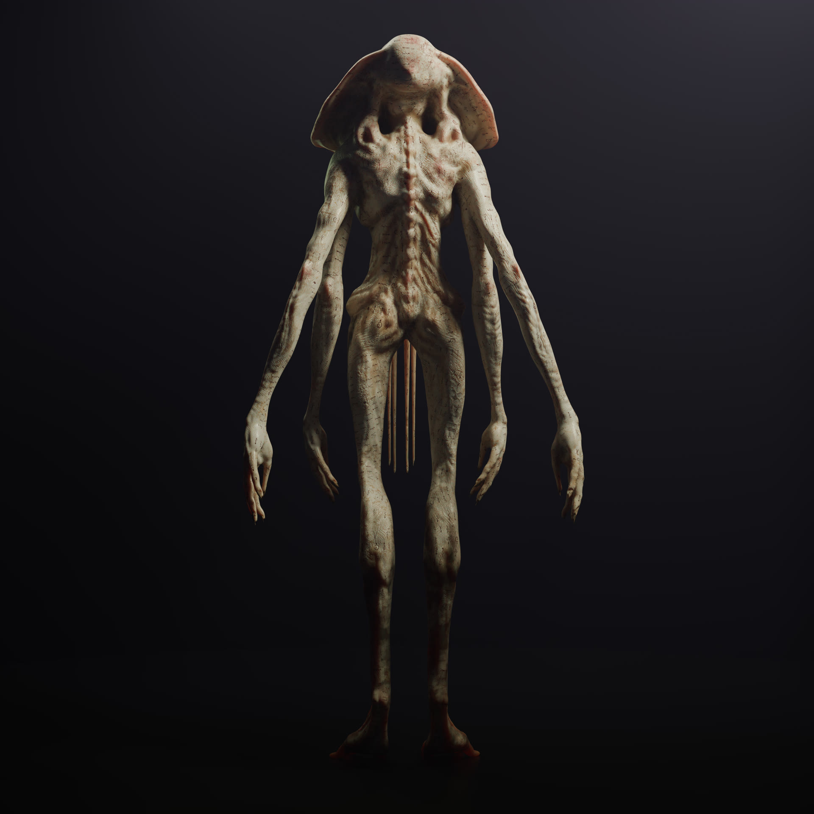
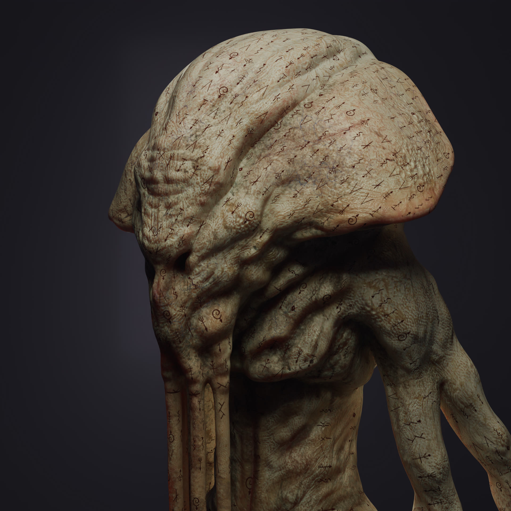
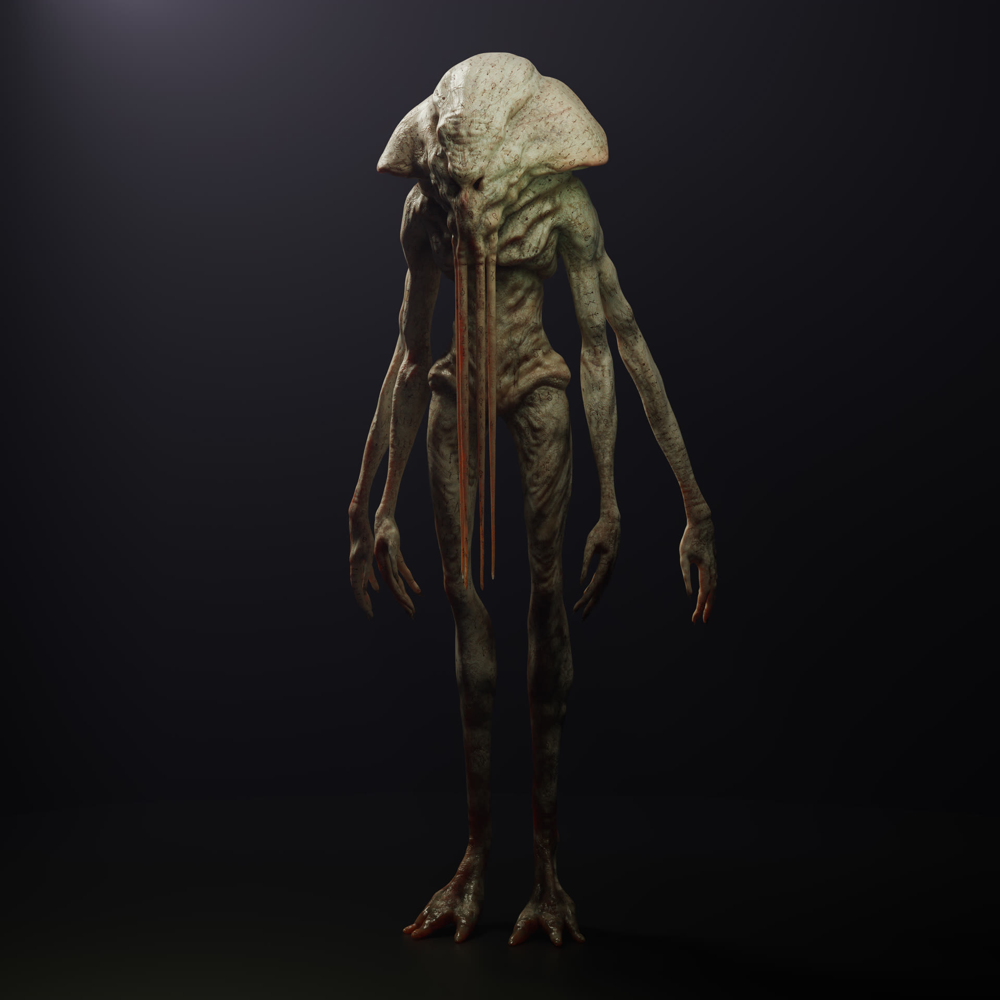
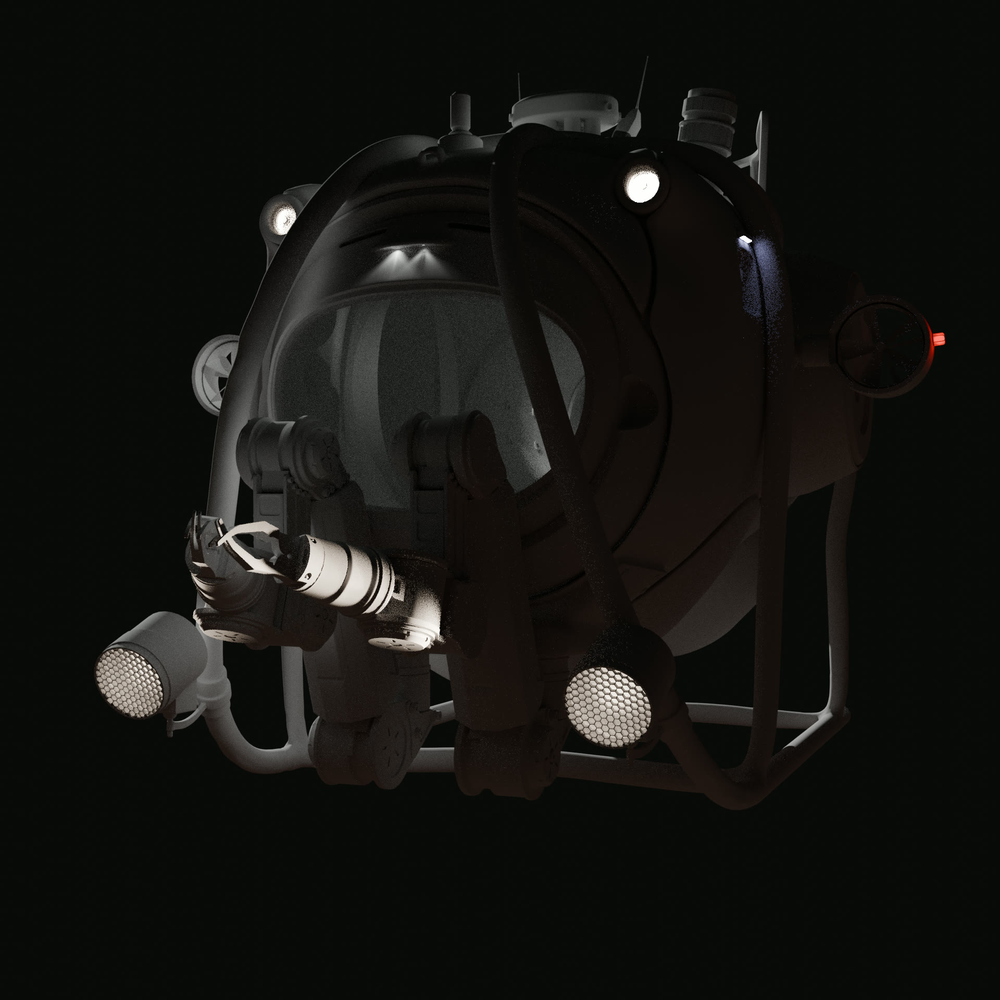
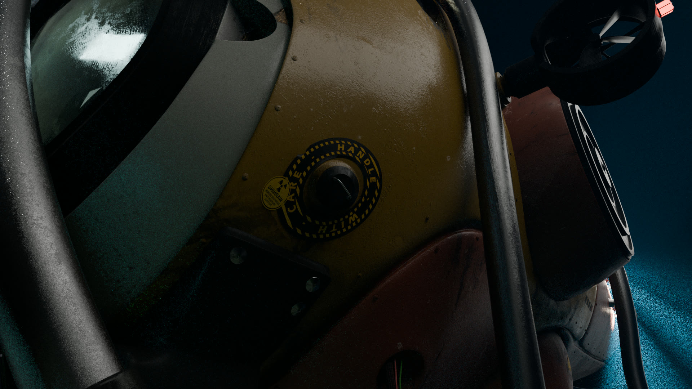
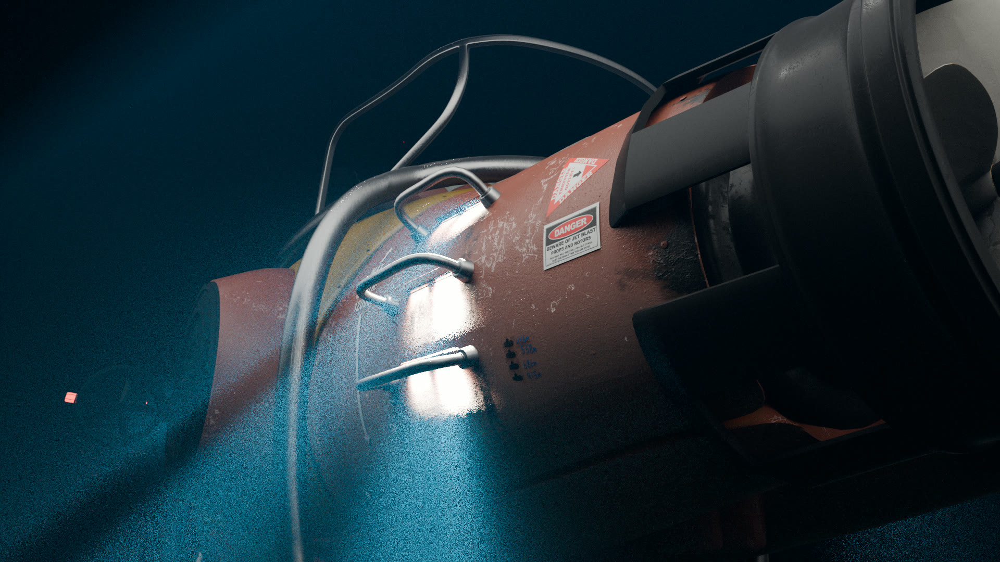
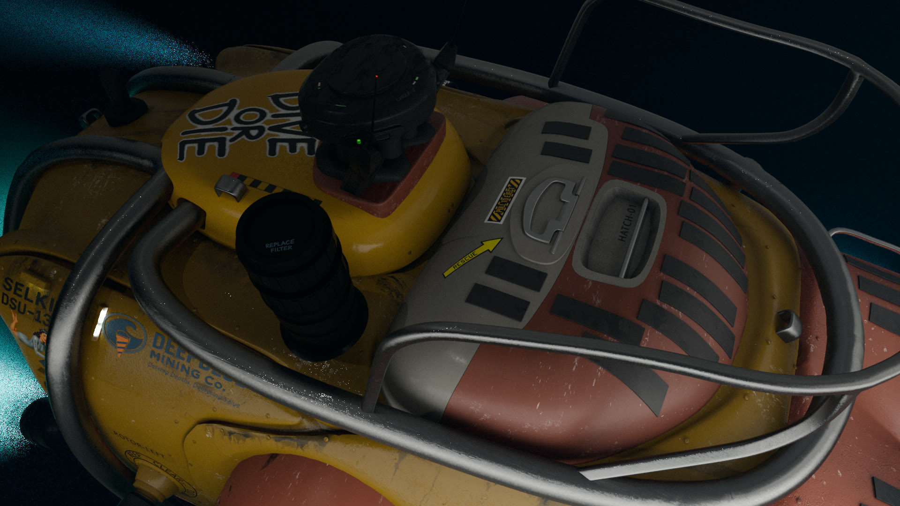

A two-person descent to the bottom of the world, a lost drilling base, and something ancient
waiting beneath the ocean floor. Bellow Challenger Deep is a narrative short film in development,
blending a tight submarine piece with full 3D abyssal environments and a reimagined vision of Cthulhu.
Bellow Challenger Deep is a genre short film that combines
deep-sea exploration, industrial exploitation and cosmic horror.
The story takes place almost entirely inside a single environment:
an exploration submarine dropped to the very bottom of the Pacific Ocean,
into the Challenger Deep.
Only two characters are involved:
Ekko, the pilot and sole human on board; and
Martha, her operator and only contact with the surface,
seen exclusively through screens and video feeds.
Hired by a deep-sea mining company, they are sent to investigate the sudden silence
of an abyssal drilling base and the failure of several unmanned probes.
What begins as a technical mission quickly turns into a descent towards something
far older, larger, and more incomprehensible than any human structure.
Story & Atmosphere
The film is built as a pressure-driven chamber piece:
one real set – the interior of the submarine – and an outside world that is
entirely created in 3D: the ocean floor, the wrecked drilling base, the abyss,
and the creature itself.
Ekko's mission seems straightforward:
Locate the missing probes sent by the company.
Reach the deep-sea base Beyond Five, installed near the Challenger Deep.
Recover the data and understand why the station went dark.
As she descends, light disappears, pressure rises, and the signals become increasingly erratic.
The drones are found crushed, mangled by forces that do not match standard mechanical failure.
Beyond Five lies torn open at the edge of a newly-formed fracture in the seabed
– a crevasse that does not appear on any map, as if the geology itself has shifted around something.
Ekko gradually understands that the catastrophe is not only industrial or seismic.
Beneath the station, below the trench, something is vast enough to deform the ocean floor –
and to start bending Ekko's perception of reality.
Creature Design – Cthulhu Reimagined
The central entity of Bellow Challenger Deep is a personal reinterpretation of Cthulhu, designed to feel:
Colossal – on the scale of a drowned city.
Both human-like and monstrous, capable of echoing familiar forms to influence Ekko.
Mostly seen in fragments – silhouettes, masses in the darkness, glimpses of skin,
tentacles and impossible proportions, long before any full reveal.
The goal is not to show everything in a single clean shot, but to let the viewer’s imagination work from a few
strong, unsettling images: organic textures, almost mineral, metallic reflections under the water, and a sense
of a living mass surrounding the creature rather than a simple outline.



Creature Turnaround
A full turnaround of the creature used as a reference base for animation, lighting and scale cues
inside the abyssal environments.
...
The Submarine & Industrial World
Ekko's submarine is treated almost as a character of its own:
A fully enclosed cockpit, no glass dome, no external view without cameras.
Overloaded control panels, monitors, sonar screens and manipulator arms.
Visible wear and tear: scratched metal, tired seals, worn leather on the pilot's seat.
It is designed to feel realistic for a contemporary deep-sea industrial mission,
but also barely capable of surviving situations that should be physically lethal –
including pressure spikes and direct contact with the creature.
The drilling base Beyond Five and the corporate universe of the client
root the story in a very current context:
Exploitation of rare earths and polymetallic sulfides at extreme depths.
Tension between economic imperatives and the destruction of deep ecosystems.
Official communication that looks clean and controlled, hiding a catastrophic reality on the ocean floor.

Submarine · WIPSubmarine · Final 01

Submarine · Final 02

Submarine · Final 03

Submarine · Final 04
Cosmic horror aesthetics inspired by Lovecraft, grounded in a contemporary industrial setting.
A very dark palette of blue-blacks and deep violets, punctuated by a few light sources:
submarine headlights, white algae, bioluminescent organisms and strange glows in the abyss.
The contrast between the cold precision of the technology
and the incomprehensible nature of what Ekko encounters at the bottom
is central to the film's mise en scène.
The deeper she goes, the more she tries to rationalise what she sees – and the less
her instruments make sense of the signals they receive.
My Role
Scriptwriting and narrative design.
Global art direction (creature, submarine, environments, overall mood).
3D modeling and texturing of the submarine and key assets.
Creature design and sculpt.
Lookdev, shading and lighting for the abyss environments.
Pipeline preparation for integrating full 3D shots with live-action footage.
Project Status
Bellow Challenger Deep is currently in visual development
and technical pre-production:
Script (feature-level worldbuilding, short-film structure) in advanced draft.
Creature close-ups and turnaround completed or in final iteration.
Submarine design and first passes on abyssal environments completed.
The goal is to produce a short film under 20 minutes, combining
a single live-action set with fully CG deep-sea environments and creature work.